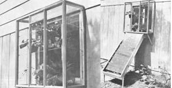
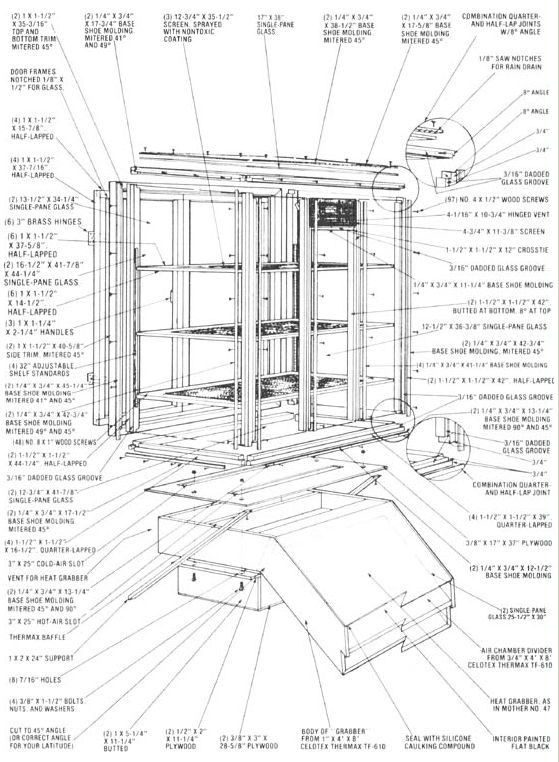

You can build a solar heater, a greenhouse, and a food dryer. . . all for the price (and effort!) of one.
Recent installments of Solar on a Shoestring have shown you how to put the sun to work growing plants, heating houses, and drying food . . . with devices designed to apply passive solar energy in specific ways. But when one investigates the principles behind greenhouses, collectors, and dehydrators, it becomes obvious that all three types of sun-gatherers employ the same basic concepts . . . and even use similar materials.
In fact, the kinship that exists among most solar devices hasn't escaped the attention of MOTHER's research staff, and - in designing this issue's project - Emerson Smyers and Randy Weis decided to take advantage of that similarity. Their three-way window box provides indoor access to either a well-ventilated greenhouse ( for houseplants or spring starts), a spacious food dryer (with a supplemental solar collector), or a simple passive solar heater. And not only does the "triple threat" sun-powered device take up little space, but each of its varied capabilities tends to be most often required during a different season . . . a fact that allows you to keep your investment busy all year round!
Naturally, there are a number of ways to go about building such a window box, and most of the designs we've seen are temporary - because they need to be removed for at least part of the year - and therefore not often built to last. But carpenters Weis and Smyers decided that their creation ought to be solid, weatherproof, and ready to stand the ravages of time . . . since it could easily become a permanent part of a home.
As a consequence, Randy devised some leakproof (and very strong) joints for all the box's corners, and canted the roof downward at an 8° angle to shed rain. He also specified that a plate-glass covering be used (rather than less costly plexiglass or vinyl) . . . both to resist the high temperatures that are likely to occur during dehydration and to assure that the glazing will survive years of use under intense ultraviolet rays. (You could, of course, construct the same basic design with simpler joints . . . in order to create a "quicker" and less expensive - though not so long-lived - solar unit.)
MOTHER's "sun box" is intended to be slipped into an existing window frame - once the sash strip and sash have been removed - but, of course, there are dozens of different standard window sizes, so you may have to adjust the dimensions shown in the accompanying drawing to suit your particular portal. And once you've secured the three-in-one solar collector in place, it would be a good idea to caulk around it to prevent any unnecessary infiltration. (One section of flashing set across the upper junction of the wall and box will provide added insurance against any moisture leaks.)
During the sultry summer months the Heat Grabber (see MOTHER NO. 47, page 101 for additional construction details) that slips into a holder on the bottom of the box will probably not be necessary, so you might want to remove the supplemental heater at such times and store it out of danger from basketballs and wobbling bicyclists. Other than that, there's little involved in using the three-for-one suncatcher. You can open or close the doors and/or vents on the window box to gain or lose heat as needed. And - depending on your own needs at the moment - you can put up an amazing amount of food on the screened racks, or keep a selection of springtime greenery on your windowsill all year long.
EDITOR'S NOTE: If you'd like assistance in putting together this triple-duty solar collector/Heat Grabber/dehydrator - with a complete materials list, detailed photographic instruction, and tips for easy assembly - you can order either blueprint-type plans or the combination package of printed plans and a 1/2" step-by-step video cassette of the assembly process. Simply send $10 (for the printed sheets) or $49.95 (for the plans / video-cassette combination) to Mother's Plans, Window Box, P.O. Box A, East Flat Rock, North Carolina 28726. (NOTE: The plans will be ready for mailing in early December 1980.)
|
 |
 |
|